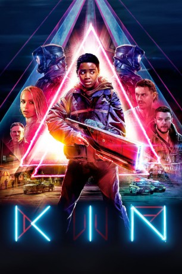

#11271 Kin
 
 IMDB-Wertung: 5.7 / 10
IMDB-Wertung: 5.7 / 10  Metascore: 35
Metascore: 35 
Teenager Eli streift gerne durch ein verlassenes, ruiniertes Stück Landschaft in der Nähe seines Zuhauses. Bei einem dieser Streifzüge entdeckt er einen mysteriösen Gegenstand, der sich schnell als mächtige Waffe entpuppt. Als sein gerade aus dem Gefängnis entlassener Adoptivbruder Jimmy dann von den Schergen eines skrupellosen Gangsterbosses bedroht wird, eilt Eli ihm zur Hilfe – wodurch er und Jimmy allerdings selbst zu Gejagten werden. Nicht nur wollen die Gangster die gefundene Waffe für sich haben, um damit ihre finsteren Pläne in die Tat umsetzen zu können, auch kriegt die Polizei Wind von der Sache und macht sich auf die Suche nach Eli und Jimmy. Außerdem sind da natürlich noch die außerirdischen Soldaten, denen die Waffe gehört und die sie um jeden Preis zurückhaben wollen…
Jahr: 2018
Dauer: 103 Minuten
FSK: 12
Land: USA Studio: LionsgateTonspuren: DTS - ,
Untertitel:
Auflösung: 1080p (1920x808) Größe: 5857 MB
Genre: Action, Thriller, Drama, Sci-Fi
Regisseur: Jonathan Baker, Josh Baker
Drehbuch: Jonathan Baker, Josh Baker, Daniel Casey
Soundtrack: Mogwai
Darsteller:
- Myles Truitt als Eli Solinski
 Jack Reynor als Jimmy Solinski
Jack Reynor als Jimmy Solinski Dennis Quaid als Hal Solinski
Dennis Quaid als Hal Solinski Zoë Kravitz als Milly
Zoë Kravitz als Milly James Franco als Taylor Balik
James Franco als Taylor Balik Romano Orzari als Lee Jacobs
Romano Orzari als Lee Jacobs Mike Chute als Lee's Heavy
Mike Chute als Lee's Heavy Carrie Coon als
Carrie Coon als  Ian Matthews als
Ian Matthews als - Gavin Fox als
- Stephane Garneau-Monten als
- Lukas Penar als
- Carleigh Beverly als
- Lily Gao als
 Michael B. Jordan als
Michael B. Jordan als  Milton Barnes als
Milton Barnes als - Carson Manning als
- Bree Wasylenko als
- Neil Davison als
- Peter Schindelhauer als
- Madelyn Grace als
- Kevan Kase als
- Ivan Sherry als
- Eli Ham als
- Trent Pardy als
 Jonathan Cherry als
Jonathan Cherry als - Anita Nittoly als
- Shawn J. Hamilton als
- Amos Stern als
- Stella Acquisto als
- Jeffrey Barnes als
- Rufio Luey als
- Drew Moss als
- Carlos Pinder als
- Chris Rogers als
- Attila Sebesy als
- Michael Grisley als
- Khalid Klein als
- Sean Fowler als
- Dave Lewis als
- Sarah Dodd als
- Steve Whistance-Smith als
- Jarrod MacLean als
- Dave Alaimo als
- Nolan Greenwald als
- Raimo Kurppa als Gambling Patron (uncredited)
- Jim Pagiamtzis als
- Ivan Wanis-Ruiz als
Datei: X:\2018(G-M)\Kin (2018, FSK12, 1920x808).mkv seit 08.06.2019
Festplatte: HD 2018(G-Z)-2019(A-Z)
 Es gibt insgesamt 138 Filme in der Gruppe '2018(G-M)'
Es gibt insgesamt 138 Filme in der Gruppe '2018(G-M)'